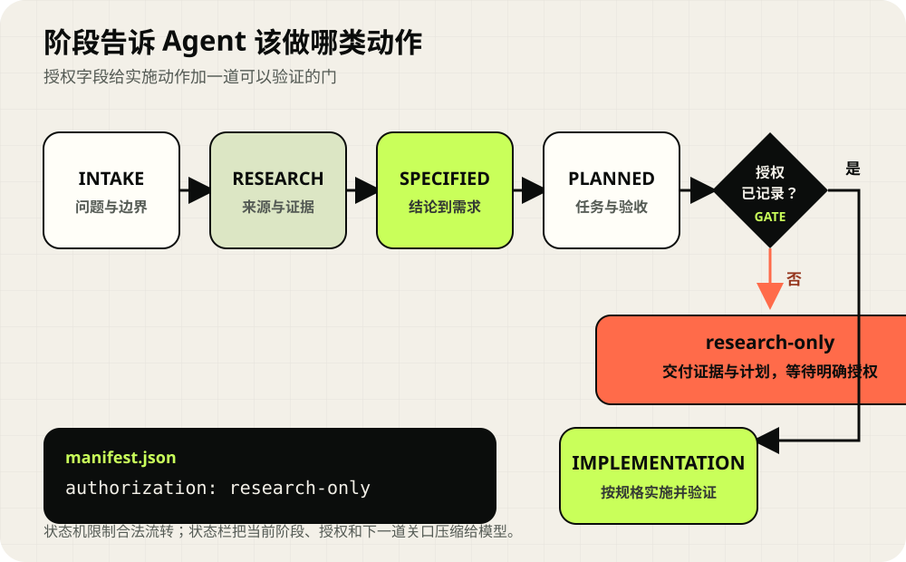
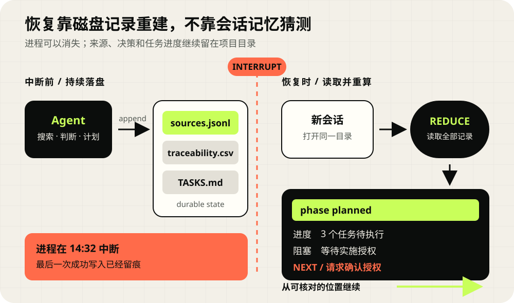

材料成熟度
问题是否回答、来源是否登记、决定能否追到依据、规格是否带验收条件。
phase: specified2026.08 · Agent Skill · Knowledge pipeline
复杂任务会把旧代码、外部资料和多个决定塞进同一段长对话。Research-to-Spec 先把问题、证据、决定、规格、任务与验证留在 Git 中，再从这些文件派生一段当前状态，让中断后的下一轮能看到授权边界、已完成内容和下一道关卡。
Agent Skill 是一组可复用的说明、脚本和模板，编程智能体加载后可以按同一套流程工作。
本地工作区沿用 SpecScout 这个开发名；公开项目与 Skill 名称统一为 Research-to-Spec。

01 / Problem
仓库内的真实案例要为证据账本选择逐行文本 JSONL 或单文件数据库 SQLite。三个研究问题已经回答，15 条来源已经登记，需求和任务也已写好。用户当时只授权调研与规格制定，所以三项实施任务仍等待批准。只看到“材料已形成规格”，下一位 Agent 可能误把它理解成“可以开始改代码”。
问题是否回答、来源是否登记、决定能否追到依据、规格是否带验收条件。
phase: specified任务是否开始、文件是否改变、声明的检查有没有运行、观察结果是否记录。
tasks: 0 / 3 completed当前请求允许调研、制定规格，还是已经明确允许修改产品代码。
authorization: research-only02 / Contract & status
任务契约记录目标、范围、交付物、禁止项和完成条件。状态投影读取当前文件，压缩成下一轮决策需要的少量字段。两者共享稳定编号，各自回答不同时间尺度的问题。
TASK CONTRACT · T0
STATUS PROJECTION · Tn
| 层 | 保存什么 | 由谁维护 | 中断后用途 |
|---|---|---|---|
| 任务契约 | 目标、范围、交付物、授权 | 用户指令与初始化流程 | 恢复任务边界 |
| 材料树 | 来源、发现、决定、规格、任务、验证 | Agent 与确定性脚本 | 解释依据并继续编辑 |
| 状态投影 | 阶段、计数、活动项、完整性、下一关 | render_status.py | 快速找到当前位置 |
| 运行快照 | 恢复执行器所需的完整序列化数据 | 宿主运行时 | 精确恢复暂停的执行 |
状态投影带有 derived="true"。完整事实继续留在材料树中；执行器需要精确暂停恢复时，还要使用宿主提供的 checkpoint 或 run state。
03 / Workflow
流程先检查当前仓库，再扩大到官方资料、源码、Issue 与社区案例。外部内容作为证据保存，不会直接改写允许动作、完成状态或用户授权。
读取仓库约定、代码与已有决定。
按不确定性选择 Lite、Standard 或 Deep。
把关键未知拆成带停止条件的问题。
登记来源类型、时间、版本与适用范围。
比较证据，保留冲突、限制和备选方案。
写出可验收需求、任务路径与检查方法。
收到明确实施请求后更新授权字段。
记录实际命令、观察结果和残余限制。
CURRENT SELF-TEST STATUS
下面的 XML 由当前案例文件读取生成。为突出决策字段，示例省略标题、规格路径和来源路径，并缩短下一关文字；完整输出可用页面下方的命令重新生成。
<research_status projection_schema="0.1"
case_schema="0.2" derived="true">
mode: standard
phase: specified
authorization: research-only
case_updated_at: 2026-08-13T07:24:49+08:00
questions: answered=3/3
sources: total=15; current=15
trace: total=16; planned=16
tasks: completed=0/3
integrity: invalid_records=0
next_gate: request implementation approval
</research_status>一次独立空 case 前向测试曾发现模板示例被计成 1 个任务。示例现已改成注释，复验结果为任务 0/0、finding / decision / requirement / verification 均为 0；模板只提供写法，不再制造假进度。
04 / Artifacts
研究材料放在 search/，工作定义放在 specs/。文本、JSONL、CSV 与 Markdown 都能进入普通 Git 审查；完整网页、私人材料和许可证不清楚的源码副本留在提交之外。
REPOSITORY TREE
search/<case>/
├── INDEX.md
├── manifest.json
├── synthesis.md
├── traceability.csv
└── questions/q-001-.../
├── question.md
├── sources.jsonl
├── findings.md
└── artifacts/
specs/<case>/
├── SPEC.md
├── PLAN.md
├── TASKS.md
└── VERIFICATION.mdSTABLE TRACE
Question会影响选择的问题
Source来源或本地实验
Finding证据能够支持的发现
Decision项目接受或拒绝的选择
Requirement带验收条件的需求
Task有路径与检查方法的任务
Verification实际观察和结果
05 / Recovery & audit
新会话无需重新阅读全部搜索历史。它先生成状态投影，确认授权与下一关，再打开当前焦点对应的材料；遇到结论争议时，沿稳定编号回到来源和限制。

render_status.py 只读 case 文件，每次都可重算计数、阶段和下一关。
先读状态、索引与综合决定，再打开当前问题、需求或任务，控制上下文负担。
发现、决定、需求、任务和验证都保留上游编号，推理跳跃能被定位。
validate_case.py 检查结构和关系；规划关系完整不等于实施完成。
06 / Quick start
Alpha 阶段推荐显式调用 Skill，并把调研范围与实施边界写进请求。四个辅助脚本只使用 Python 标准库，也不会主动下载或执行来源内容。
INSTALL
npx skills add fjnuslw/research-to-spec仓库同时提供 Codex 手动复制说明；其他 Agent Skills 宿主仍需按各自安装方式验证。
CALL
使用 $research-to-spec 调研这个功能。
先读当前仓库，再查可靠资料和失败案例。
保存证据并生成规格，本轮停在实施之前。python skills/research-to-spec/scripts/init_case.py local-search --project-root . --mode standard --authorization research-only --title "Local search" --question "Which engine fits this repository?"
python skills/research-to-spec/scripts/add_source.py search/local-search --question Q-001 --type official-docs --authority primary --title "Upstream documentation" --url "https://example.com/docs" --summary "Supported storage model."
python skills/research-to-spec/scripts/render_status.py search/local-search --project-root .
python skills/research-to-spec/scripts/validate_case.py search/local-search --project-root . --strict| Package | 开放格式 Agent Skill · SKILL.md · agents/openai.yaml |
|---|---|
| Helpers | Python 标准库 · init · add source · render status · validate |
| Artifacts | Markdown · JSON · JSONL · CSV · 许可证允许的必要附件 |
| 自动验证 | 当前配置：Ubuntu latest · Python 3.11 · unittest · 自用案例严格校验 |
| License | MIT |
07 / Evidence & boundaries
下面的计数来自仓库内 examples/jsonl-vs-sqlite 自用案例在 2026-08-13 的严格校验。它证明默认文件契约和追踪关系能够通过当前验证器；它没有提供生产力、正确率或跨宿主兼容性的对照结论。
当前版本为 0.1.0-alpha.2，适合试用、审查和反馈。
评估协议已经记录耗时、返工、追踪完整度和盲审指标；同条件基线结果仍待补齐。
Spec Kit、OpenSpec、Kiro 等现有布局目前需要人工核对稳定编号连接。
不同研究问题可以并行；同一问题目录并发追加来源仍缺少互斥保护。
执行器的精确恢复继续依赖宿主 checkpoint；投影可从文件重建，无法替代完整运行快照。